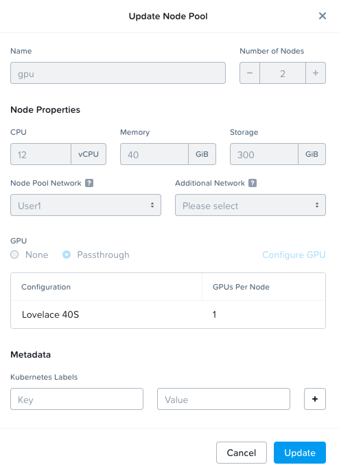

Deploy NKE Clusters
This section will take you through install NKE(Kubernetes) on Nutanix cluster as we will be deploying AI applications on these kubernetes clusters.
This section will expand to other available Kubernetes implementations on Nutanix.
stateDiagram-v2
direction LR
state DeployNKE {
[*] --> CreateTofuWorkspaces
CreateTofuWorkspaces --> CreateMgtK8SCluster
CreateMgtK8SCluster --> CreateDevK8SCluster
CreateDevK8SCluster --> DeployGPUNodePool
DeployGPUNodePool --> [*]
}
PrepWorkstation --> DeployJumpHost
DeployJumpHost --> DeployNKE
DeployNKE --> DeployGiabGitOps : Next sectionNKE Setup
We will use Infrastructure as Code framework to deploy NKE kubernetes clusters.
Pre-requisites
- Prism Central is at least version
2023.4 - NKE is enabled on Nutanix Prism Central
- NKE is at at least version
2.10(updated through LCM) - NKE Node OS is at least version
ntnx-1.7 - NKE Kubernetes is at least version
1.26.11-0 - Monitoring on each NKE Cluster is ENABLED
NKE High Level Cluster Design
The Management NKE cluster will be a centralized cluster that the AI applications on each Workload NKE cluster will be leveraged for automation and observability.
The Workload NKE cluster will be hosting the LLM model serving endpoints and AI application stack. This cluster and will require a dedicated GPU node pool.
We will create a 1 x NKE cluster for Management and at min. 1 x NKE cluster for the DEV Workloads.
Once DEV deployment has been tested successfully, we can deploy applications to optional PROD Workload cluster.
Management Cluster
Since the Management Cluster will be essential to all AI application workloads, we will deploy an NKE cluster of type "Production".
| Role | No. of Nodes (VM) | vCPU | RAM | Storage |
|---|---|---|---|---|
| Master | 2 | 8 | 16 GB | 120 GB |
| ETCD | 3 | 4 | 8 GB | 120 GB |
| Worker | 3 | 12 | 16 GB | 300 GB |
Dev Workload Cluster
For Dev, we will deploy an NKE Cluster of type "Development".
| Role | No. of Nodes (VM) | vCPU | RAM | Storage |
|---|---|---|---|---|
| Master | 1 | 8 | 16 GB | 120 GB |
| ETCD | 1 | 4 | 8 GB | 120 GB |
| Worker | 3 | 12 | 16 GB | 300 GB |
| GPU | 2 | 12 | 40 GB | 300 GB |
Prod Workload Cluster
For Prod, we will deploy an NKE Cluster of type "Production".
| Role | No. of Nodes (VM) | vCPU | RAM | Storage |
|---|---|---|---|---|
| Master | 2 | 8 | 16 GB | 120 GB |
| ETCD | 3 | 4 | 8 GB | 120 GB |
| Worker | 3 | 12 | 16 GB | 300 GB |
| GPU | 2 | 12 | 40 GB | 300 GB |
Create TOFU Manifest file
-
If you haven't already done so, Open new
VSCodewindow -
In
VSCodeExplorer pane, Click on existingtofu-workspaceFolder -
Click on New Folder name it:
nke-tofu -
On
VSCodeExplorer plane, click thetofu-workspace/nke-tofufolder, click on New File and create a tofu manifest file with following name:with the following content:
main.tfterraform { required_providers { nutanix = { source = "nutanix/nutanix" version = "1.9.5" } } } locals { config = yamldecode(file("${path.module}/.env.${terraform.workspace}.yaml")) } data "nutanix_cluster" "cluster" { name = local.config.prism_element.cluster_name } data "nutanix_subnet" "subnet" { subnet_name = local.config.prism_element.subnet_name } provider "nutanix" { username = local.config.prism_central.user password = local.config.prism_central.password endpoint = local.config.prism_central.endpoint insecure = false wait_timeout = 60 } resource "nutanix_karbon_cluster" "nke_cluster" { name = terraform.workspace version = local.config.nke.k8s_version storage_class_config { reclaim_policy = "Delete" volumes_config { file_system = "ext4" flash_mode = false prism_element_cluster_uuid = data.nutanix_cluster.cluster.id storage_container = local.config.prism_element.storage_container username = local.config.prism_element.user password = local.config.prism_element.password } } cni_config { node_cidr_mask_size = 24 pod_ipv4_cidr = "172.20.0.0/16" service_ipv4_cidr = "172.19.0.0/16" } worker_node_pool { node_os_version = local.config.nke.node_os_version num_instances = local.config.nke.worker.num_instances ahv_config { cpu = local.config.nke.worker.cpu_count memory_mib = local.config.nke.worker.memory_gb * 1024 disk_mib = local.config.nke.worker.disk_gb * 1024 network_uuid = data.nutanix_subnet.subnet.id prism_element_cluster_uuid = data.nutanix_cluster.cluster.id } } etcd_node_pool { node_os_version = local.config.nke.node_os_version num_instances = local.config.nke.etcd.num_instances ahv_config { cpu = local.config.nke.etcd.cpu_count memory_mib = local.config.nke.etcd.memory_gb * 1024 disk_mib = local.config.nke.etcd.disk_gb * 1024 network_uuid = data.nutanix_subnet.subnet.id prism_element_cluster_uuid = data.nutanix_cluster.cluster.id } } master_node_pool { node_os_version = local.config.nke.node_os_version num_instances = local.config.nke.master.num_instances ahv_config { cpu = local.config.nke.master.cpu_count memory_mib = local.config.nke.master.memory_gb * 1024 disk_mib = local.config.nke.master.disk_gb * 1024 network_uuid = data.nutanix_subnet.subnet.id prism_element_cluster_uuid = data.nutanix_cluster.cluster.id } } timeouts { create = "1h" update = "30m" delete = "10m" } }
Deploying Management Cluster
-
In
VSCodeTerminal, change working directory to thenke-tofufolder -
In
VSCodeTerminal, Create Tofuworkspacefor target NKE Management Cluster -
On
VSCodeExplorer plane, click thetofu-workspace/nke-tofufolder, click on New File and create a environment config file for target Management Cluster with following name:Update Nutanix environment access details along with any NKE specific configurations. See example file for details
.env.mgmt-cluster.yamlprism_central: endpoint: <PC FQDN> user: <PC admin user> password: <PC admin password> prism_element: cluster_name: <PE Cluster Name> storage_container: default subnet_name: <PE Subnet> user: <PE admin user> password: <PE admin password> nke: k8s_version: 1.26.11-0 node_os_version: ntnx-1.7 master: num_instances: 1 cpu_count: 8 memory_gb: 16 disk_gb: 300 etcd: num_instances: 1 cpu_count: 4 memory_gb: 8 disk_gb: 300 worker: num_instances: 3 cpu_count: 12 memory_gb: 16 disk_gb: 300.env.mgmt-cluster.yamlprism_central: endpoint: "pc.example.com" # < Change to PC endpoint > user: "admin" # < Change to PC admin user> password: "XXXXXXXX" # < Change to PC admin pass> prism_element: cluster_name: "mypecluster" # < Change to PE element cluster name > storage_container: default # < Change to PE element cluster storage container name > subnet_name: "VLAN.20" # < Change to PE element subnet name > user: "admin" # < Change to PE admin user> password: "XXXXXXXX" # < Change to PE admin pass> nke: k8s_version: 1.26.11-0 node_os_version: ntnx-1.7 master: num_instances: 1 cpu_count: 8 memory_gb: 16 disk_gb: 300 etcd: num_instances: 1 cpu_count: 4 memory_gb: 8 disk_gb: 300 worker: num_instances: 3 cpu_count: 12 memory_gb: 16 disk_gb: 300 -
Initialize and Validate your tofu code
-
Apply your tofu code to create NKE cluster, associated virtual machines and other resources
-
Run the OpenTofu state list command to verify what resources have been created
# Sample output for the above command data.nutanix_cluster.cluster # < This is your existing Prism Element cluster data.nutanix_subnet.subnet # < This is your existing primary subnet nutanix_image.jumphost-image # < This is the image file for jump host VM nutanix_virtual_machine.nai-llm-jumphost # < This is the jump host VM nutanix_karbon_cluster.mgt_cluster # < This is your Management NKE cluster
Deploying DEV cluster
The DEV cluster will contain GPU node pool to deploy your AI apps.
-
Create TOFU workspace for DEV NKE Cluster
-
Create the Management NKE cluster config.yaml
Tip
The previous
.env.mgmt-cluster.yamlcould be copiedwith the following content:
.env.dev-cluster.yamlprism_central: endpoint: <PC FQDN> user: <PC user> password: <PC password> prism_element: cluster_name: <PE Cluster Name> storage_container: default subnet_name: <PE Subnet> user: <PE user> password: <PE password> nke: k8s_version: 1.26.11-0 node_os_version: ntnx-1.7 master: num_instances: 1 cpu_count: 8 memory_gb: 16 disk_gb: 300 etcd: num_instances: 1 cpu_count: 4 memory_gb: 8 disk_gb: 300 worker: num_instances: 3 cpu_count: 12 memory_gb: 16 disk_gb: 300 -
Validate your tofu code
-
Apply your tofu code to create NKE cluster, associated virtual machines and other resources
-
Run the Terraform state list command to verify what resources have been created
# Sample output for the above command data.nutanix_cluster.cluster # < This is your existing Prism Element cluster data.nutanix_subnet.subnet # < This is your existing primary subnet nutanix_image.jumphost-image # < This is the image file for jump host VM nutanix_virtual_machine.nai-llm-jumphost # < This is the jump host VM nutanix_karbon_cluster.mgt-cluster # < This is your Management NKE cluster nutanix_karbon_cluster.dev-cluster # < This is your Dev NKE cluster
Adding NodePool with GPU
In this section we will create a nodepool to host the AI apps with a GPU.
Note
At this time there is no tofu support for creating a nodepool with GPU parameters. We will use NKE's karbonctl tool. Once tofu nodepool resource is updated with gpu parameters, we will update this section.
It is necessary to connect to Prism Central (PC) to be able to access the karbonctl tool.
-
Login to the ssh session of PC
-
Login to NKE control plane using karbonctl tool
-
Check the number of available GPUs for Dev NKE cluster
-
Create a new gpu nodepool and assing it 1 GPU
karbonctl cluster node-pool add --cluster-name dev-cluster --count 2 --cpu 12 --memory 40 --disk-size 300 --gpu-count 1 --gpu-name "Lovelace 40S" --node-pool-name gpuCommand executionPCVM:~$ karbonctl cluster node-pool add --cluster-name dev-cluster --count 2 --cpu 12 --memory 40 ---disk-size 300 -gpu-count 1 --gpu-name "Lovelace 40S" --node-pool-name gpu I acknowledge that GPU enablement requires installation of NVIDIA datacenter driver software governed by NVIDIA licensing terms. Y/[N]:Y Successfully submitted request to add a node pool: [POST /karbon/v1-alpha.1/k8s/clusters/{name}/add-node-pool][202] addK8sClusterNodePoolAccepted &{TaskUUID:0xc001168e50} -
Monitor PC tasks to confirm creation on VM and allocation of GPU to the VM
-
Once nodepool is created, go to PC > Kubernetes Management > dev-cluster > Node Pools and select gpu nodepool
-
Click on update in the drop-down menu
-
You should see that one GPU is assigned to node pool

We now have a node that can be used to deploy AI applications and use the GPU.